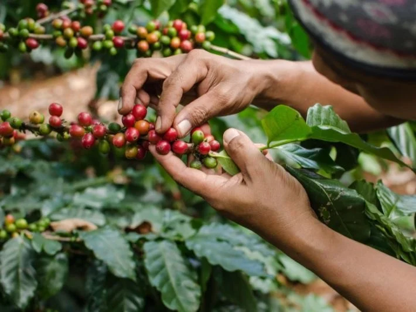
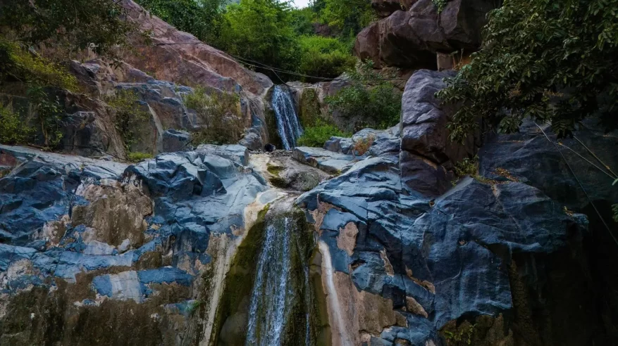
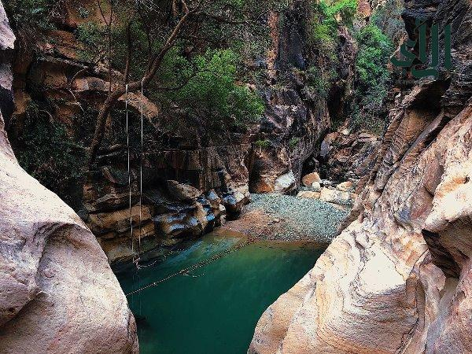

جبال فيفاء

تعتبر جبال فيفاء أعجوبة معمارية وطبيعية، حيث تتشكل من مجموعة جبال متلاصقة تبدو من بعيد كهرام أخضر يعانق السماء، وتشتهر بمدرجاتها الزراعية التي دشنها الأجداد ببراعة هندسية مذهلة لتطويع التضاريس القاسية. تمتاز فيفاء بمناخها الفريد الذي يجمع بين الدفء والبرودة المعتدلة، وهي موطن للنباتات العطرية مثل الكادي والبعيثران التي تفوح رائحتها في أرجاء الجبل، بالإضافة إلى قممها الشاهقة مثل "مطل القنذل" الذي يمنحك شعوراً بأنك تقف فوق السحاب تماماً. ندعوكم لزيارتها ليس فقط للاستمتاع بالمناظر، بل لتجربة كرم أهلها والتعرف على بيوتها الأسطوانية القديمة التي تحكي قصة صمود الإنسان، ولتذوق السمن والعسل الجبلي الأصيل في تجربة ريفية لا تُنسى.
اكواخ لي لونا

يستقر كوخ "لي لونا" كقطعة فنية خشبية في أعالي الجبل الأسود بمحافظة الريث، وهو يمثل الجيل الجديد من السياحة الريفية الفاخرة التي تمزج بين بساطة الكوخ وعصرية الخدمات. يمتاز الموقع بإطلالة بانورامية ساحرة تجعلك تستيقظ على مشهد الضباب وهو يتدفق بين الوديان السحيقة تحت قدميك، في أجواء باردة وهادئة بعيداً عن ضجيج الحياة الحديثة. إن زيارة هذا الكوخ هي دعوة للاختلاء بالنفس أو قضاء وقت رومانسي هادئ، حيث يمكنك الجلوس في الشرفة ومراقبة تحولات السماء من الشروق حتى النجوم الساطعة ليلاً؛ إنها تجربة تحثك على الانفصال عن العالم الخارجي والاتصال المباشر مع نقاء الطبيعة الجبلية البكر.
مزرعة قنيف للبن

تقع مزرعة قنيف في قلب جبال الداير بني مالك، وهي ليست مجرد مزرعة بل هي متحف حي لزراعة "البن الخولاني" السعودي الذي يُعد من أجود أنواع البن في العالم ومسجل ضمن قائمة اليونسكو. تمتاز المزرعة بتنظيمها الرائع ومدرجاتها التي تفوح برائحة زهور البن البيضاء في مواسم معينة، وتوفر للزوار رحلة تعليمية تبدأ من معرفة طرق الري القديمة وصولاً إلى مرحلة التحميص والاحتساء. نحثكم على زيارة مزرعة قنيف لدعم الاستدامة الزراعية والتعرف على ثقافة القهوة السعودية من منبعها، حيث يمكنك الاستمتاع بجلسات شعبية أصيلة وسط حقول البن، وهي فرصة مثالية لهواة التراث والباحثين عن المذاق الأصيل والقصص الإنسانية الملهمة المرتبطة بالأرض.
شلال الدوحين في هروب

يختبئ شلال الدوحين بين أحضان جبال محافظة هروب، وهو واحد من أجمل الشلالات الطبيعية الدائمة في المنطقة، حيث تنحدر المياه الصافية من بين الصخور الضخمة لتستقر في بحيرة طبيعية تحفها الأشجار الخضراء والنباتات البرية. يمتاز هذا المكان بعزلته الجمالية وهدوئه الذي لا يقطعه سوى خرير الماء وتغريد الطيور، مما يجعله وجهة مثالية لمحبي "الهايكنج" والاستجمام في الطبيعة المفتوحة. إن الذهاب إلى شلال الدوحين هو بمثابة رحلة استشفائية؛ حيث يمنحك المكان طاقة إيجابية كبيرة وهواءً مشبعاً بالرطوبة المنعشة، وهو يدعو كل باحث عن المغامرة البسيطة والتصوير الضوئي لاكتشاف هذا الكنز المخفي الذي يجسد روعة الطبيعة البكر في جنوب المملكة.
وادي لجب

يُصنف وادي لجب كواحد من أغرب وأجمل الظواهر الطبيعية في الجزيرة العربية، فهو عبارة عن شق صخري ضيق وشاهق الارتفاع (صدع انكساري) تخترقه المياه الجارية والشلالات الصغيرة على مدار العام. ما يميز "لجب" هو التباين المذهل بين حرارة الجو في الخارج والبرودة الشديدة والظل الدائم داخل الوادي، بالإضافة إلى "الحدائق المعلقة" التي تنبت في جدرانه الصخرية على ارتفاعات شاهقة. ندعوكم لزيارة هذا الوادي لخوض مغامرة لا تتكرر، حيث يمكنك المشي وسط المياه والسباحة في أحواضه الطبيعية واستكشاف التكوينات الصخرية الملونة؛ إنه مكان يحبس الأنفاس ويحثك على تقدير عظمة الخالق في تكوين هذه التضاريس الفريدة.
جبال القهر

تقع جبال القهر (زهوان) في محافظة الريث كشاهد عيان على تاريخ جيولوجي وبشري ضارب في القدم، حيث تمتاز بتشكيلات صخرية أسطوانية نادرة تبدو وكأنها منحوتة بيد فنان، مما يعطيها طابعاً مهيباً وغامضاً. تمتاز هذه الجبال ببرودتها العالية واحتضانها للعديد من النقوش الأثرية والكهوف التي كانت مسكناً للإنسان القديم، بالإضافة إلى إطلالاتها التي تكشف مساحات شاسعة من تهامة جازان. زيارة جبال القهر هي رحلة للمتأملين والباحثين عن التفرد، فهي توفر بيئة مثالية للتخييم تحت النجوم واستكشاف الممرات الضيقة بين الصخور العظيمة، وهي دعوة مفتوحة لكل مصور وفنان ومستكشف لرؤية تضاريس لن يجد لها مثيلاً في أي مكان آخر بالعالم.